생산자동화기능사 (2011-10-09 기출문제)
1과목: 기계가공법 및 안전관리(대략구분)
1. 다음 중 보통 보링머신을 분류한 것으로 맞지 않는 것은?
- 테이블형
- 플레이너형
- 플로어형
- 코어형
(정답률: 65%)

2. 기계 장치의 안전에 대한 사항으로 적합하지 않은 것은?
- 일감과 절삭 공구가 회전하는 기계작업을 할 때에는 장갑을 끼지 않는다.
- 기계의 전원장치에는 동력 차단장치가 있어야 한다.
- 연삭기의 숫돌에는 견고한 안전커버가 있어야 한다.
- 선반의 공구대 위에 공구를 올려놓고 작업을 해야 한다.
(정답률: 88%)
3. 선반 작업에서 절삭가공시 회전수를 구하는 공식은? (단, d = 공작물 직경(㎜), n = 주축의 회전수(rpm), v = 절삭속도이다.)
- n = 1000v
- n = 1000πd
- n = (1000v)/(πd)
- n = (πd)/(1000v)
(정답률: 74%)
4. 절삭 공구재료의 구비조건으로 적합하지 않은 것은?
- 내마모성이 클 것
- 형상을 만들기 쉬울 것
- 고온에서 경도가 낮고 취성이 클 것
- 피삭재보다 단단하고 인성이 있을 것
(정답률: 82%)
5. 선반 작업에서 원통의 지름이 1/2로 줄어들 때 회전수의 변화는?
- 일정하다.
- 2배로 증가한다.
- 22배로 증가한다.
- 감소한다.
(정답률: 80%)
6. 광물성유를 화학적으로 처리하여 원액과 물을 혼합하여 사용하며, 표면활성제와 부식방지제를 첨가하여 사용하는 절삭유제는?
- 등유
- 라드유
- 스핀들유
- 에멀젼
(정답률: 52%)
7. 밀링 커터 중 기어의 이 모양과 같이 공작물의 형상과 동일한 윤곽을 가진 커터는?
- T형 밀링커터
- 정면 밀링커터
- 플라이 커터
- 총형 밀링커터
(정답률: 68%)
8. 선반에서 가공할 수 없는 작업은?
- 나사 가공
- 기어 가공
- 테이퍼 가공
- 구멍 가공
(정답률: 75%)
9. 나사 마이크로미터는 나사의 어느 부분을 측정하는 가?
- 피치
- 바깥지름
- 골지름
- 유효지름
(정답률: 58%)
10. 밀링머신에서 사용하는 절삭공구가 아닌 것은?
- 엔드밀
- 정면커터
- 총형커터
- 브로치
(정답률: 80%)
2과목: 기계제도(대략구분)
11. 한 부품에 같은 종류의 구멍이 여러 개가 있다. 구멍의 지시선 위에 “20 - 10 드릴”이라는 구멍 표시의 올바른 해석은?
- 구멍의 지름이 20㎜이고, 구멍의 수가 10개이다.
- Ø20㎜의 드릴 구멍과 Ø10㎜의 드릴 구멍이 있다.
- Ø10㎜의 드릴 구멍이 20㎜ 간격으로 있다.
- Ø10㎜의 드릴 구멍이 20개 있다.
(정답률: 68%)
12. 그림과 같은 면의 지시기호에서 A부에 기입하는 내용은 무엇인가?
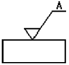
- 가공 방법
- 산술 평균거칠기 값
- 컷오프 값
- 줄무늬 방향의 기호
(정답률: 77%)
13. 다음 도면에 사용된 치수가 아닌 것은?
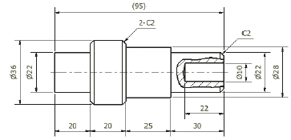
- 참고 치수
- 모떼기 치수
- 지름 치수
- 반지름 치수
(정답률: 85%)
14. 베어링 호칭번호가 62⑤인 경우 안지름은 몇 mm인가?
- 15
- 20
- 25
- 2⑤
(정답률: 73%)
15. 투상도법에서 그림과 같이 경사진 부분의 실제 모양을 도시하기 위하여 사용하는 투상도의 명칭은?
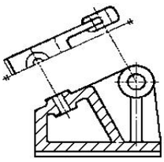
- 부분 투상도
- 국부 투상도
- 부분 확대도
- 보조 투상도
(정답률: 57%)
16. 다음 도면에서 A 치수는 얼마인가?
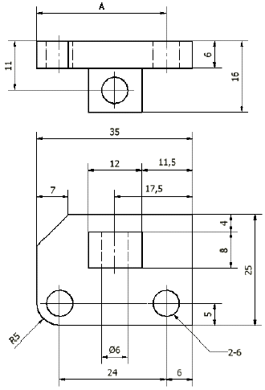
- 26
- 27
- 28
- 29
(정답률: 80%)
17. 기계 제도에서 도형에 나타나지 않으나 공작시의 이해를 돕기 위하여 가공 전 형상이나, 공구의 위치 등을 나타내는데 사용하는 선은?
- 파단선
- 숨은선
- 중심선
- 가상선
(정답률: 76%)
18. 그림과 같은 입체도에서 화살표 방향이 정면도일 경우 평면도로 가장 적합한 것은?
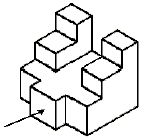
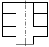
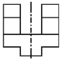
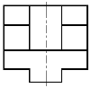
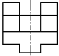
(정답률: 87%)
19. 구멍 Ø80에 대해 h5, h6, h7, h8 끼워 맞춤 공차를 적용할 때, 치수공차 값이 가장 작은 것은?
- h5
- h6
- h7
- h8
(정답률: 78%)
20. 기하공차의 종류를 성격에 따라 구분하고자 할 때 이에 해당하지 않는 것은?
- 흔들림 공차
- 위치 공차
- 자세 공차
- 허용 공차
(정답률: 59%)
21. 내경이 20mm인 실린더에 6㎏f/cm2의 유압이 공급될 때 실린더 로드에 작용하는 힘(㎏f)은 약 얼마인가? (단, 내부 마찰력은 무시한다.)
- 9.9
- 18.8
- 24.4
- 37.6
(정답률: 66%)
22. 전진운동과 후진운동을 할 때 실린더 피스톤이 낼 수 있는 힘의 크기가 같은 실린더는?
- 단동 실린더
- 편로드 복동 실린더
- 양로드 복동 실린더
- 쿠션 내장형 실린더
(정답률: 84%)
23. 다음 그림의 밸브 기호에서 제어 위치의 개수는?
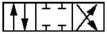
- 1개
- 2개
- 3개
- 4개
(정답률: 75%)
24. 다음 중 “2압 밸브”를 “AND 밸브”라고도 하는 이유를 설명한 것이다. 옳은 것은?
- 공기 흐름을 정지 또는 통과시켜 주므로
- 두 개의 공기 입구 모두에 공압이 작용해야만 출력이 나오므로
- 독립적으로 사용되므로
- 역류를 방지하기 때문에
(정답률: 88%)
25. 다음 중 유압유에 비해 압축공기의 특성을 설명한 것으로 틀린 것은?
- 탱크 등에 저장이 용이하다.
- 온도에 극히 민감하다.
- 폭발과 인화의 위험이 거의 없다.
- 먼 거리까지도 쉽게 이송이 가능하다.
(정답률: 68%)
26. 다음 중 회로의 최고 압력을 제어하는 밸브로써, 유압 시스템 내의 최고 압력을 유지시켜 주는 밸브는?
- 릴리프 밸브
- 체크 밸브
- 압력 스위치
- 카운터 밸런스 밸브
(정답률: 77%)
27. 다음 중 공압 조정 유닛의 구성요소에 속하지 않는 것은?
- 필터
- 냉각기
- 압력 조절 밸브
- 윤활기
(정답률: 52%)
28. 압축기로부터 토출되는 고온의 압축공기를 공기건조기 입구 온도 조건에 알맞게 냉각시켜 수분을 제거하는 장치는?
- 애프터 쿨러
- 자동 배출기
- 스트레이너
- 공기 필터
(정답률: 81%)
29. 다음 중 유압 시스템의 압력제어 밸브에 속하지 않는 것은?
- 릴리프 밸브
- 감압 밸브
- 카운터 밸런스 밸브
- 체크 밸브
(정답률: 64%)
30. 다음 중 공압 장치의 특징을 설명한 것으로 틀린 것은?
- 압축 공기의 에너지를 쉽게 얻을 수 있다.
- 동력 전달 방법이 간단하고 용이하다.
- 힘의 증폭 및 속도 조절이 용이하다.
- 정확한 위치 결정 및 중간 정지가 용이하다.
(정답률: 67%)
3과목: 메카트로닉스 일반(대략구분)
31. 다음 중 수치제어 공작기계(NC 공작기계)는 자동 생산 시스템의 어떤 분야에 속하는가?
- 자동 가공
- 자동 조립
- 자동 설계
- 자동 검사
(정답률: 84%)
32. CCD 카메라로 읽은 화상을 보고 대상 물체의 모양이나 양호 또는 불량 상태를 판별하는 센서는?
- 로드 셀
- 광전 센서
- 비전 센서
- 근접 센서
(정답률: 56%)
33. 공장 자동화의 추진 목적과 가장 거리가 먼 것은?
- 생산성 향상
- 품질의 균일화
- 제품 고급화
- 원가 절감
(정답률: 76%)
34. 다음 래더 다이어그램에 따라 PLC 명령문을 코딩할 때 잘못된 것은?
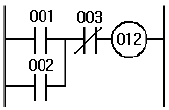
- 001 : AND 001로 코딩한다.
- 002 : OR 002로 코딩한다.
- 003 : AND NOT으로 코딩한다.
- 012 : OUT 012로 코딩한다.
(정답률: 60%)
35. 산업용 다관절 로봇이 3차원 공간에서 임의의 위치와 방향에 있는 물체를 잡는데 필요한 자유도는?
- 3
- 4
- 5
- 6
(정답률: 79%)
36. 산업 현장에서 사용되고 있는 로봇이 경제적이고 실질적으로 이용될 수 있는 분야에 대한 기준이 아닌 것은?
- 위험한 작업
- 간단한 반복 작업
- 검사가 필요하지 않는 작업
- 변화가 자주 일어나는 작업
(정답률: 86%)
37. 불연속 동작의 대표적인 것으로 제어량이 목표값에서 어떤 양만큼 벗어나면 미리 정해진 일정한 조작량이 대상에 가해지는 제어는?
- 온 오프 제어
- 비례 제어
- 미분 동작 제어
- 적분 동작 제어
(정답률: 49%)
38. 자동제어의 종류를 신호 특성에 따라 분류할 때 이에 속하는 것은?
- 서보기구
- 아날로그 제어
- 자력 제어
- 타력 제어
(정답률: 66%)
39. PLC 프로그램에 대한 설명 중 틀린 것은?
- 입력 조건 없이는 모선에 출력을 지정할 수 없다.
- 동일한 출력 코일을 두 번 이상 사용할 수 있다.
- 더미 접점을 사용하여 출력할 수 있다.
- 신호의 흐름은 좌에서 우로 또는 위에서 아래로 흐르게 한다.
(정답률: 73%)
40. 금속체나 자성체에서 발생되는 전계나 자계의 변화를 감지하여 접점을 개폐하며 물체와 직접 접촉하지 않고 검출하는 스위치는?
- 수동 스위치
- 근접 스위치
- 광전 스위치
- 액면 스위치
(정답률: 74%)
41. 일반적인 PLC 제어와 릴레이 제어의 특성을 비교 설명한 것으로 틀린 것은?
- PLC 제어는 릴레이 제어보다 고장 부위 발견이 어렵다.
- PLC 제어는 릴레이 제어보다 제어반의 크기는 작다.
- PLC 제어는 릴레이 제어보다 고속 동작이 가능하다.
- PLC 제어는 릴레이 제어보다 시스템 구성 시간이 짧다.
(정답률: 71%)
42. 다음 중 PLC의 기능이 아닌 것은?
- 입, 출력 데이터 처리 기능
- 서보 기능
- 시퀀스 처리 기능
- 타이머와 카운터 기능
(정답률: 60%)
43. 시퀀스 제어와 되먹임 제어를 비교할 때 되먹임 제어계에서 반드시 필요한 제어요소는?
- 구동장치
- 신호처리 및 제어장치
- 입, 출력 비교장치
- 응답속도 가속장치
(정답률: 83%)
44. PLC하드웨어 구조에서 외부 입, 출력 기기의 노이즈가 PLC의 CPU쪽에 전달되지 않도록 하기 위하여 사용되는 소자는?
- 다이오드
- 트랜지스터
- LED
- 포토 커플러
(정답률: 66%)
45. 자동화 시스템의 구성 장치와 거리가 가장 먼 것은?
- 수치 제어 선반
- PLC
- 무인 운반차
- 범용 밀링
(정답률: 82%)
46. 1 또는 0과 같이 하나의 입력에 대하여 항상 그에 대응하는 출력을 발생하게 하고, 다음에 새로운 입력이 주어질 때까지 그 상태를 안정적으로 유지하는 회로로서 컴퓨터 집적 회로 속에서 기억 소자로 사용되는 것은?
- 금지 회로
- 플립 플롭 회로
- 인터록 회로
- 선행 우선 회로
(정답률: 80%)
47. 유접점 회로와 비교하여 무접점 회로의 특징을 설명한 것 중 옳지 않은 것은?
- 수명이 길다.
- 응답 속도가 빠르다.
- 소형화에 적합하다.
- 전기적 노이즈에 강하다.
(정답률: 76%)
48. 그림과 같은 계전기 접점 회로를 간단히 한 논리식은?
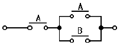
- A
- A'
- AㆍB
- A+B
(정답률: 49%)
49. 전자석에 의해 접점을 개폐하는 전자 접촉기와 부하의 과전류에 의해 동작하는 열동 계전기가 조합된 장치는?
- 보조 계전기
- 시간 계전기
- 플리커 계전기
- 전자 개폐기
(정답률: 82%)
50. 두 개 이상의 전자 계전기가 동시에 동작하는 것을 방지하기 위해 사용하는 회로는?
- 자기 유지회로
- 인터록 회로
- 경보 회로
- 검출 회로
(정답률: 86%)
51. 동작 특성을 여러 가지 기호로 표현할 때 다음 중 그 특성이 다른 하나는?
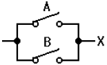
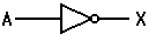
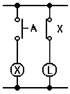
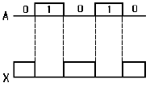
(정답률: 61%)
52. 다음 중 입력 신호 주파수의 1/2의 출력 주파수를 얻는 플립 플롭은?
- JK 플립플롭
- D 플립플롭
- T 플립플롭
- RS 플립플롭
(정답률: 59%)
53. 그림과 같은 기호의 명칭은?(오류 신고가 접수된 문제입니다. 반드시 정답과 해설을 확인하시기 바랍니다.)
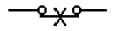
- 수동 복귀 접점
- 한시 복귀 접점
- 전자접촉기 접점
- 제어기 접점(드럼형)
(정답률: 40%)
54. 시퀀스 제어회로에서 기동 스위치를 ON하여도 제어 회로가 인칭회로처럼 동작하여 연속적으로 정상 동작을 할 수 없다. 이 때 어떤 회로를 추가로 구성하면 연속적으로 정상동작을 시킬 수 있는가?
- 인터록 회로
- 자기유지 회로
- 부정 회로
- 지연 회로
(정답률: 70%)
55. 다음 그림에 대한 논리식으로 맞는 것은?
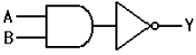
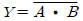
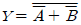
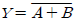
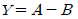
(정답률: 66%)
56. 다음 계전기 문자 기호에서 유지 계전기에 해당하는 것은?
- BR
- GR
- KR
- PR
(정답률: 69%)
57. 입력 신호가 하이(High)이면 출력은 로우(Low)이고, 입력 신호가 로우(Low)이면 출력이 하이(High)가 나오는 논리 회로는?
- AND
- OR
- NOT
- NAND
(정답률: 79%)
58. 다음 중 논리식이 틀린 것은?
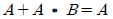
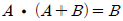
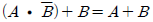
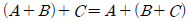
(정답률: 52%)
59. 미리 정해진 순서에 따라 제어의 각 단계를 진행하는 제어방식은?
- 자동 제어
- 시퀀스 제어
- 조건 제어
- 피드백 제어
(정답률: 89%)
60. 다음 그림의 기호는 무엇을 나타내는가?
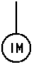
- 직류 전동기
- 유도 전동기
- 직류 발전기
- 교류 발전기
(정답률: 72%)
설명: "코어형"은 일반적으로 보링머신의 분류에 포함되지 않습니다. "테이블형"은 작은 작업물을 가공할 때 사용되며, "플레이너형"은 대형 작업물을 가공할 때 사용됩니다. "플로어형"은 대형 작업물을 가공할 때 사용되며, 바닥에 설치되어 있습니다. "코어형"은 일반적으로 사용되지 않는 용어이며, 보통 "코어드리븐형"이라는 용어로 대체됩니다. "코어드리븐형"은 고속 및 고정밀 가공을 위해 설계된 보링머신으로, 고속 회전하는 코어를 사용하여 가공합니다.